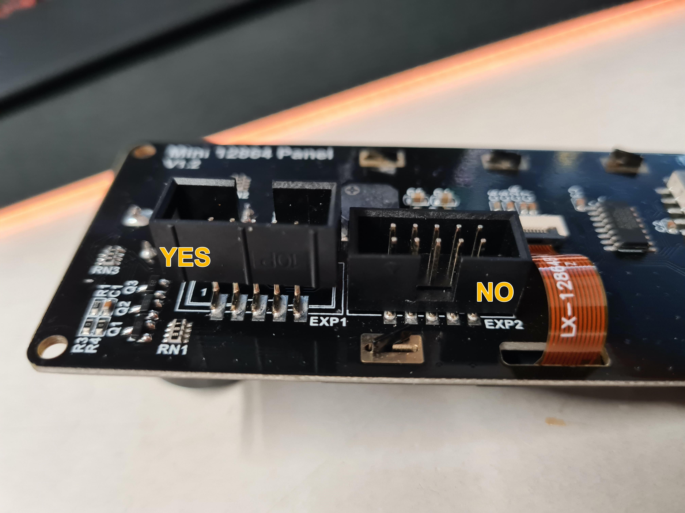

NOTE: The two connector housings only need to be reversed if the MCU and display are different brands. If you have both a BigTree Tech mini12864 and a BigTree Tech MCU (Or both a FYSETC mini12864 and an FYSETC F6/S6), skip steps 1 & 2

Most stock Voron configuration files already have appropriate configurations for this display built in, which simply needs to be un-commented. These configs are customized for the specific builds, and should be what you use. _Note: There are multiple config sections required to make the mini12864 fully operational: [display], [neopixel fysetc_mini12864] and [delayed_gcode setdisplayneopixel]_
Some users find that they want to reverse the direction the menu wheel spins. You can easily reverse its operation by swapping the order of the two pins in the [display] encoder_pins line. For example, if your stock config contains the line
encoder_pins: ^PC7,^PC6
you would change it to
encoder_pins: ^PC6,^PC7
The Mini12864 display can be a little tricky to get running correctly. Here is a short checklist to help double check some of the common issues.
[display], [output_pin beeper], [neopixel fysetc_mini12864], AND [delayed_gcode setdisplayneopixel] to fully enable all features of your display. (many users may not feel the need to enable [output_pin beeper])